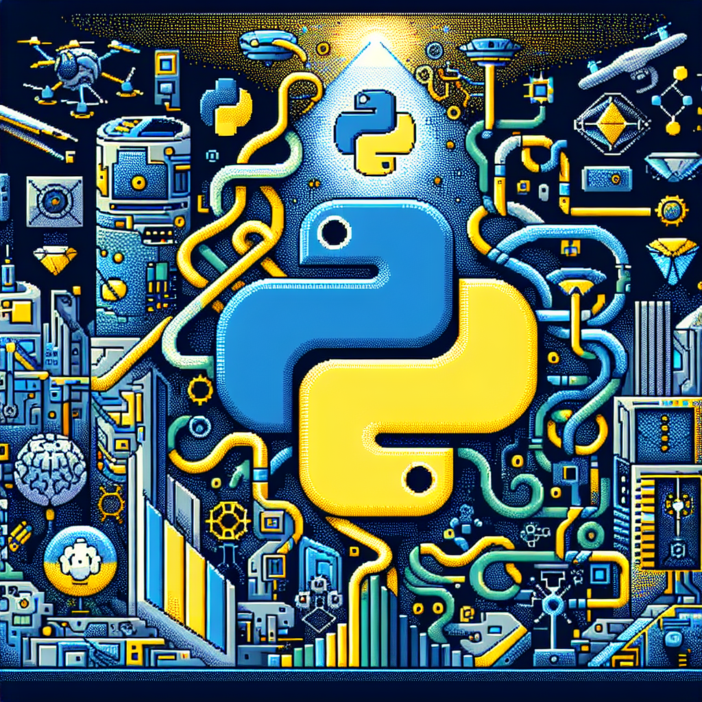

The future of Python and AI
As the tech industry continues to develop and evolve, so too does the programming language that powers many of its products and services. Python has become one of the most popular programming languages in recent years, and its applications in artificial intelligence (AI) and machine learning have only grown. In this blog post, I want to explore what the future of AI and Python could look like.
Python is an incredibly versatile language — it can be used to develop web applications, create a powerful AI algorithm, or even automate mundane tasks. With its simple syntax and wide range of libraries, it's no wonder that Python has become so popular among developers. But its ability to be used for AI and machine learning is what makes it truly unique.
AI and machine learning are becoming increasingly important in the tech industry. From self-driving cars to facial recognition systems, AI-powered algorithms are revolutionizing the way we interact with technology. And Python is the perfect language for developing AI algorithms — it's easy to learn, and its libraries and frameworks make it easy to build powerful AI systems.
In the future, Python will continue to be the go-to language for creating AI algorithms. With more libraries and frameworks being released, it's becoming easier than ever to develop powerful AI systems. Additionally, Python's ability to integrate with other languages will make it even more powerful — developers will be able to use Python as the foundation for their AI projects, while leveraging other languages to boost performance.
Finally, Python will continue to be the language of choice for AI education. With its simple syntax and wide range of libraries, Python makes it easy for beginners to learn the basics of AI. It's also becoming increasingly popular in universities, with many universities offering courses in Python and AI.
The future of AI and Python looks very bright — as the tech industry continues to grow and evolve, Python will continue to be the language of choice for developers. With its simple syntax and wide range of libraries, developers will be able to create powerful AI algorithms quickly and easily. With Python continuing to be the language of choice for AI, the possibilities for the future are endless.